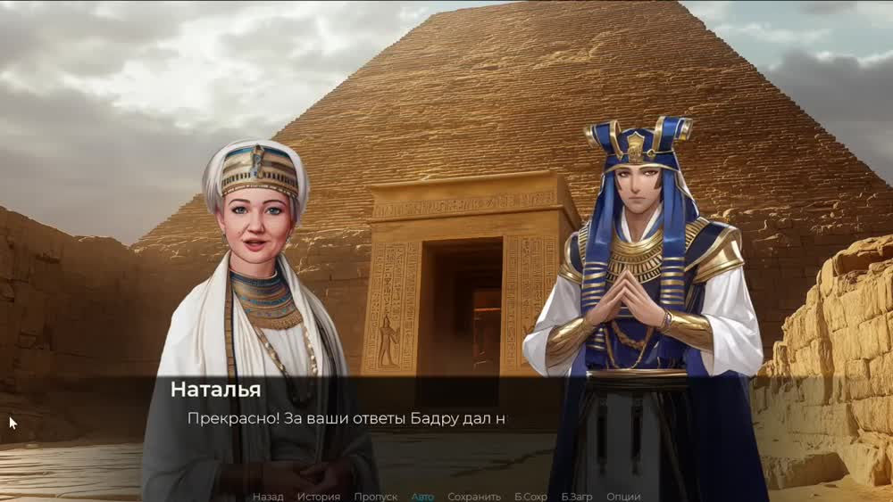
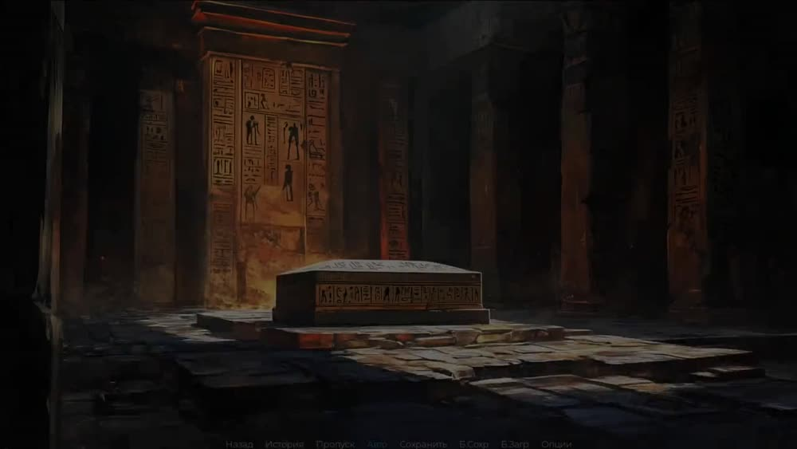
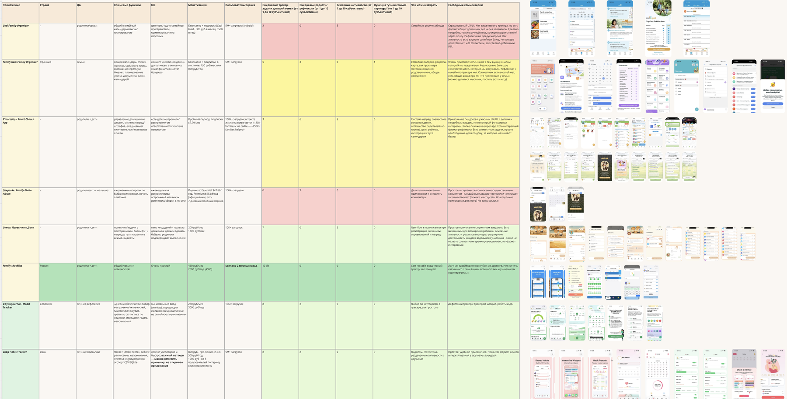
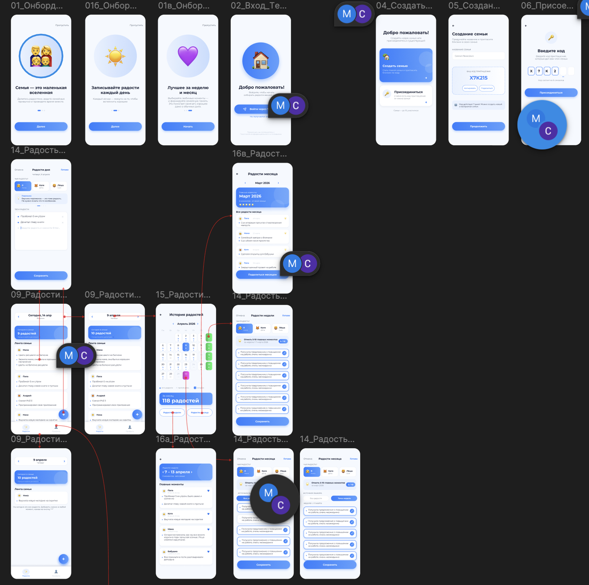

Руководитель проекта · ДПОИ Президентской академии · сентябрь 2024 — июль 2026
«Просвет. Игры»
Образовательные визуальные новеллы для студентов магистратуры программы «РЕСУРС России» и участников программы профессиональной переподготовки по проектному управлению. Задания курса встроены в сюжет: слушатель проходит эпизод и по ходу принимает решения из своей будущей работы.
Тизер первого эпизода.
3 дня → 30 минна единицу контента: персонаж, фон, трек
5 000 ₽ → 0стоимость той же единицы
+20%вовлечённость и усвоение материала
100+человек прошли 2 игры и 44 ролика
Как устроено производство
Весь визуал и звук команда делала сама, без закупки ассетов на стороне. Пайплайн под движок Ren'Py собирался так:
Персонажи и фоны генерировались в Midjourney по единому описанию стиля, чтобы эпизоды выглядели как один продукт, а не набор картинок.
Саундтреки собирались в AIVA под настроение сцены: храм, пустыня, диалог, развязка.
Сборка эпизода шла в Ren'Py: ветвление диалогов, задания по проектному управлению, сохранения, интерфейс.
Каждый ассет проходил приёмку: стиль, соответствие сцене, читаемость на фоне диалогового окна. Отбраковка закладывалась в сроки как обычный этап, а не как авария.


Персонажи и локации первого эпизода.
Документация проекта
Проект вёлся по полному комплекту: паспорт проекта и план управления, в котором план-график с контрольными точками и подтверждающими документами по каждому результату, матрица рисков с вероятностью, уровнем воздействия и рангом, план управления возможностями, план работы с пятью группами заинтересованных сторон, план коммуникаций и матрица распределения ответственности.
Оценка эффективности обучения заложена по модели Киркпатрика, показатели снимались анкетированием слушателей и преподавателей до и после внедрения.
Менеджер продукта · ZNAI Tech · март 2026 — сейчас
Семейное приложение
Мобильное приложение, в котором семья каждый день фиксирует радости и вместе отбирает лучшие моменты недели и месяца. Отвечаю за продукт целиком, кроме разработки.
Задача
Заказчик с большой семьёй хотел инструмент для общего вечернего ритуала. Существующие приложения закрывают либо быт семьи, либо личную рефлексию одного человека. Нужно было проверить, есть ли ниша на стыке, и если есть, определить, каким должен быть продукт.
Что я делал
Анализ рынка. Разобрал 11 продуктов: семейные органайзеры, трекеры привычек, дневники рефлексии. Сравнивал по целевой аудитории, ключевым функциям, UX, монетизации и охвату, каждый оценивал отдельно по двум осям: совместность и ежедневная рефлексия.
Концепция продукта. Проблема, ценность отдельно для родителя и для ребёнка, продуктовые принципы, риски, границы MVP и список отложенных функций.
Требования. Фич-лист MVP на 35 пунктов с описанием экранов, ограничениями и оценкой трудозатрат по фронтенду и бэкенду, разделённый на мобильное приложение и веб-админку.
Интерфейс. Более 20 экранов в Figma и полный пользовательский путь от регистрации до выбора радости недели. Прототип дорабатывал по итогам показов заказчику.
Метрики и гипотезы. Заложил систему для замера на запуске: удержание D1, D7, D30, конверсия онбординга в первую запись, доля семей с двумя и более активными участниками, частота записей, отток.
Как это выглядит в работе
Продукт в разработке, поэтому материалы ниже показаны общим планом: детали намеренно не читаются. Задача этих двух кадров не в том, чтобы разобрать конкретные решения, а в том, чтобы показать формат и объём работы.

Разбор рынка. По каждому продукту фиксировались страна, аудитория, ключевые функции, UX, монетизация и охват, затем шли четыре субъективные оценки по десятибалльной шкале, колонка «что можно забрать» и свободный комментарий. Справа скриншоты интерфейсов.

Рабочая доска в Figma: экраны MVP и переходы между ними, от онбординга и создания семьи до истории радостей и отбора лучших моментов недели и месяца.
Статус
Тестируем на узкой выборке. Параллельно пересобираем концепт и продолжаем изучать рынок: механик, которые закрывают отдельные куски нашего сценария, там оказалось больше, чем предполагалось на старте, поэтому сейчас решаем, какими функциями продукт будет отличаться.
Личные проекты · 2025—2026
Два телеграм-бота на LLM API
Написал на Python для собственных задач, пользуюсь ежедневно. Оба доведены до рабочего состояния.
Генератор колод Anki
По текстовому запросу собирает колоду карточек для интервального повторения и отдаёт готовым файлом. Закрывает самую долгую часть подготовки к экзаменам: раскладывание материала на вопрос и ответ.
Новостная сводка
Ежедневно присылает подборку новостей по заданным темам: собирает источники, отбирает существенное и пишет короткие выжимки.